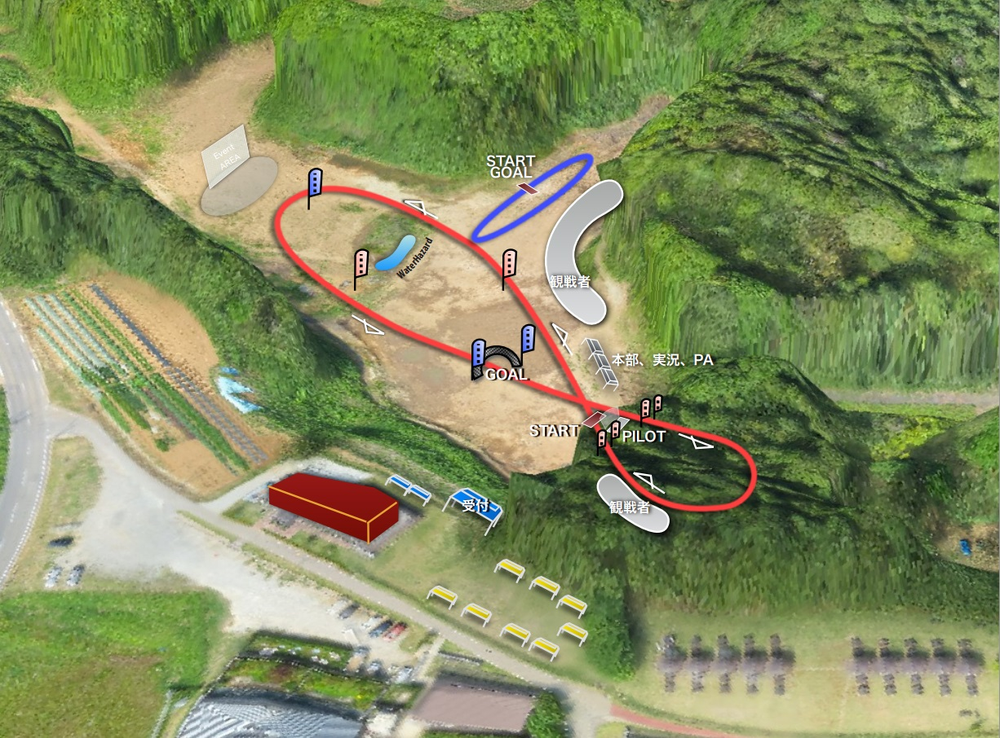

クラス
FPVクラス
ゲートやフラッグ、林間を通るFPV上級者向けコースです。
参加可能機器：ATV機では、アマチュア無線４級以上の資格と無線局免許が必要です。その他、電波法等に適合した機器（プロポ等）
参加可能機器：Wi-Fi機（DJI社、arott社等で技術基準適合のあるFPV可能機器）では、操縦者に免許等は必要ありません。その他、電波法等に適合した機器（プロポ等）
ATV機 ：5.6G帯又は1.2G帯のVTXを搭載したアマチュア無線バンドを使用する機体（下写真）
Wi-Fi機 ：DJI Phantom2、DJI Phantom3、DJI INSPIRE 1、Parrot Bebop Drone、その他DJI LightBridge搭載機
Non-FPVクラス
フラッグのみのラジコン中級者以上向けコースです。
参加可能機器：電波法等に適合した機器（プロポ等）
レース形式
FPVクラス（ATV機 及び Wi-Fi機）
・１セット４機によるコース周回
・コース３周（総距離３km程度＊バッテリ持続時間確認）
・上位２機の次ステージ昇格
・１ステージ敗者はグループBでトーナメント戦
※ATV機及びWi-Fi機を混合戦にするかは検討中
Non-FPVクラスコース
・1セット６機によるコース周回
・コース5周（総距離1.5km）
・上位２機の次ステージ昇格
・１ステージ敗者はグループBでトーナメント戦
所要時間：全10レース 150分 １レース15分（走行5分、入替10分）
使用機体基準
- 各クラスで自作機を使用する場合、レースの公平性を保つため一定の基準を設けさせていただきます。
・フレーム制限 250クラスマルチコプター
最大フレームサイズを330以下に設定してます。
・バッテリー制限 3Sリポバッテリー
3km以上又は5分以上の飛行に耐えうる容量が必要です。
・プロペラ制限 ヘキサコプター（6ローター）まで
サイズは4インチ～6インチとします。
・VTX制限 電波法（免許）で定められた周波数帯を使用できる物
※FATV機のみ